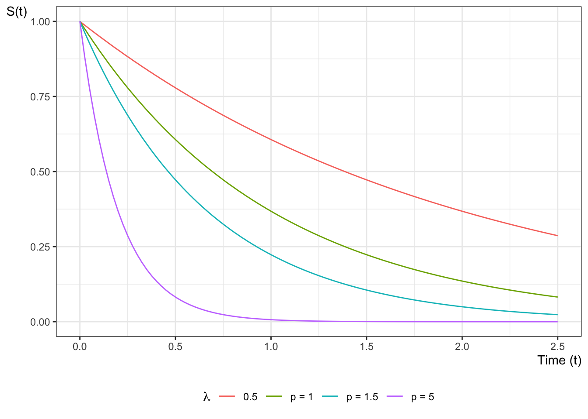
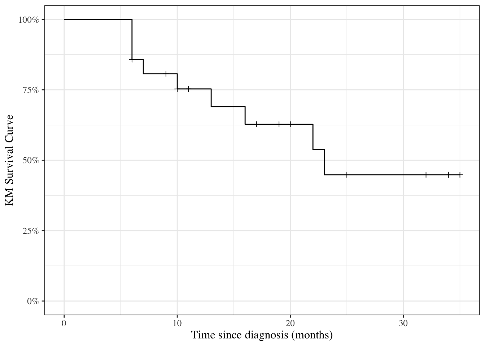

Survival analysis is a framework for modeling time-to-event outcomes. It is used in:
clinical trials, where the event is often death or recurrence of disease.
engineering reliability analysis, where the event is failure of a device or system.
insurance, particularly life insurance, where the event is death.
Note
The term survival analysis is a bit misleading. Survival outcomes can sometimes be analyzed using binomial models (logistic regression). Time-to-event models or survival time analysis might be a better name.
5.2 Time-to-event outcome distributions
5.2.1 Distributions of Time-to-Event Data
The distribution of event times is asymmetric and can be long-tailed, and starts at 0 (that is, \(P(T<0) = 0\)).
The base distribution is not normal, but exponential.
There are usually censored observations, which are ones in which the failure time is not observed.
Often, these are right-censored, meaning that we know that the event occurred after some known time \(t\), but we don’t know the actual event time, as when a patient is still alive at the end of the study.
Observations can also be left-censored, meaning we know the event has already happened at time \(t\), or interval-censored, meaning that we only know that the event happened between times \(t_1\) and \(t_2\).
Analysis is difficult if censoring is associated with treatment.
5.2.2 Right Censoring
Patients are in a clinical trial for cancer, some on a new treatment and some on standard of care.
Some patients in each group have died by the end of the study. We know the survival time (measured for example from time of diagnosis—each person on their own clock).
Patients still alive at the end of the study are right censored.
Patients who are lost to follow-up or withdraw from the study may be right-censored.
5.2.3 Left and Interval Censoring
An individual tests positive for HIV.
If the event is infection with HIV, then we only know that it has occurred before the testing time \(t\), so this is left censored.
If an individual has a negative HIV test at time \(t_1\) and a positive HIV test at time \(t_2\), then the infection event is interval censored.
5.3 Distribution functions for time-to-event variables
5.3.1 The Probability Density Function (PDF)
For a time-to-event variable \(T\) with a continuous distribution, the probability density function is defined as usual (see Section B.4.1).
In most time-to-event models, this density is assumed to be 0 for all \(t<0\); that is, \(f(t) = 0, \forall t<0\). In other words, the support of \(T\) is typically \([0,\infty)\).
Example 5.1 (exponential distribution) Recall from Epi 202: the pdf of the exponential distribution family of models is:
Given a random time-to-event variable \(T\), the survival function \(S(t)\) is the probability that the event time is later than \(t\). If the event in a clinical trial is death, then \(S(t)\) is the expected fraction of the original population at time 0 who have survived up to time \(t\) and are still alive at time \(t\); that is:
Example 5.3 (exponential distribution) Since \(S(t) = 1 - F(t)\), the survival function of the exponential distribution family of models is:
\[
P(T> t) = \left\{ {{\text{e}^{-\lambda t}, t\ge0} \atop {1, t \le 0}}\right.
\] where \(\lambda > 0\).
Figure 5.1 shows some examples of exponential survival functions.
Figure 5.1: Exponential Survival Functions

Theorem 5.1 If \(A_t\) represents survival status at time \(t\), with \(A_t = 1\) denoting alive at time \(t\) and \(A_t = 0\) denoting deceased at time \(t\), then:
\[S(t) = \Pr(A_t=1) = \mathbb{E}[A_t]\]
Theorem 5.2 If \(T\) is a nonnegative random variable, then:
Another important quantity is the hazard function:
Definition 5.2 (Hazard function) The hazard function for a random variable \(T\) at value \(t\) is the conditional density of \(T\) at \(t\), given \(T\ge t\); that is:
\[h(t) \stackrel{\text{def}}{=}p(T=t|T\ge t)\]
If \(T\) represents the time at which an event occurs, then \(h(t)\) is the probability that the event occurs at time \(t\), given that it has not occurred prior to time \(t\).
The hazard function has an important relationship to the density and survival functions, which we can use to derive the hazard function for a given probability distribution (Theorem 5.3).
Lemma 5.1 (Joint probability of a variable with itself)\[p(T=t, T\ge t) = p(T=t)\]
Proof. Recall from Epi 202: if \(A\) and \(B\) are statistical events and \(A\subseteq B\), then \(p(A, B) = p(A)\). In particular, \(\{T=t\} \subseteq \{T\geq t\}\), so \(p(T=t, T\ge t) = p(T=t)\).
As we will see below, \(H(t)\) is tractable to estimate, and we can then derive an estimate of the hazard function using an approximate derivative of the estimated cumulative hazard.
Example 5.5 The cumulative hazard function of the exponential distribution family of models is:
\[
H(t) = \mathbb{1}_{t \ge 0}\cdot \lambda t
\]
Figure 5.3 shows some examples of exponential cumulative hazard functions.
Figure 5.3: Examples of exponential cumulative hazard functions
5.3.6 Some Key Mathematical Relationships among Survival Concepts
If instead the event time \(T\) is censored and only known to be after time \(y\), then the likelihood of that censored observation is instead the survival function evaluated at the censoring time:
What’s written above is incomplete. We also observed whether or not the observation was censored. Let \(C\) denote the time when censoring would occur (if the event did not occur first); let \(f_C(y)\) and \(S_C(y)\) be the corresponding density and survival functions for the censoring event.
Let \(Y\) denote the time when observation ended (either by censoring or by the event of interest occurring), and let \(D\) be an indicator variable for the event occurring at \(Y\) (so \(D=0\) represents a censored observation and \(D=1\) represents an uncensored observation). In other words, let \(Y \stackrel{\text{def}}{=}\min(T,C)\) and \(D \stackrel{\text{def}}{=}\mathbb 1{\{T<=C\}}\).
Then the complete likelihood of the observed data \((Y,D)\) is:
As long as \(\theta_C\) and \(\theta_T\) don’t share any parameters, then if censoring is non-informative, the partial derivative with respect to \(\theta_T\) is:
Thus, the MLE for \(\theta_T\) won’t depend on \(\theta_C\), and we can ignore the distribution of \(C\) when estimating the parameters of \(f_T(t)=p(T=t)\).
That is, if the event occurred at time \(y\) (i.e., if \(d=1\)), then the likelihood of \((Y,D) = (y,d)\) is equal to the hazard function at \(y\) times the survival function at \(y\). Otherwise, the likelihood is equal to just the survival function at \(y\).
In other words, the log-likelihood contribution from a single observation \((Y,D) = (y,d)\) is equal to the negative cumulative hazard at \(y\), plus the log of the hazard at \(y\) if the event occurred at time \(y\).
5.4 Parametric Models for Time-to-Event Outcomes
5.4.1 Exponential Distribution
The exponential distribution is the base distribution for survival analysis.
The distribution has a constant hazard \(\lambda\)
Suppose we have \(m\) exponential survival times of \(t_1, t_2,\ldots,t_m\) and \(k\) right-censored values at \(u_1,u_2,\ldots,u_k\).
A survival time of \(t_i=10\) means that subject \(i\) died at time 10. A right-censored time \(u_i=10\) means that at time 10, subject \(i\) was still alive and that we have no further follow-up.
For the moment we will assume that the survival distribution is exponential and that all the subjects have the same parameter \(\lambda\).
We have \(m\) exponential survival times of \(t_1, t_2,\ldots,t_m\) and \(k\) right-censored values at \(u_1,u_2,\ldots,u_k\). The log-likelihood of an observed survival time \(t_i\) is \[
\text{log}\left\{\lambda \text{e}^{-\lambda t_i}\right\} =
\text{log}\left\{\lambda\right\}-\lambda t_i
\] and the likelihood of a censored value is the probability of that outcome (survival greater than \(u_j\)) so the log-likelihood is
\(\hat\lambda\) depends on the censoring times of the censored observations, but \(\text{Var}\left(\hat\lambda\right)\) only depends on the number of uncensored observations, \(m\), and not on the number of censored observations (\(k\)).
5.4.2 Other Parametric Survival Distributions
Any density on \([0,\infty)\) can be a survival distribution, but the most useful ones are all skew right.
The most frequently used generalization of the exponential is the Weibull.
Other common choices are the gamma, log-normal, log-logistic, Gompertz, inverse Gaussian, and Pareto.
Most of what we do going forward is non-parametric or semi-parametric, but sometimes these parametric distributions provide a useful approach.
5.5 Nonparametric Survival Analysis
5.5.1 Basic ideas
Mostly, we work without a parametric model.
The first task is to estimate a survival function from data listing survival times, and censoring times for censored data.
For example one patient may have relapsed at 10 months. Another might have been followed for 32 months without a relapse having occurred (censored).
The minimum information we need for each patient is a time and a censoring variable which is 1 if the event occurred at the indicated time and 0 if this is a censoring time.
5.6 Example: clinical trial for pediatric acute leukemia
5.6.1 Overview of study
This is from a clinical trial in 1963 for 6-MP treatment vs. placebo for Acute Leukemia in 42 children.
Pairs of children:
matched by remission status at the time of treatment (remstat: 1 = partial, 2 = complete)
randomized to 6-MP (exit times in t2) or placebo (exit times in t1)
Followed until relapse or end of study.
All of the placebo group relapsed, but some of the 6-MP group were censored (which means they were still in remission); indicated by relapse variable (0 = censored, 1 = relapse).
6-MP = 6-Mercaptopurine (Purinethol) is an anti-cancer (“antineoplastic” or “cytotoxic”) chemotherapy drug used currently for Acute lymphoblastic leukemia (ALL). It is classified as an antimetabolite.
5.6.2 Study design
Clinical trial in 1963 for 6-MP treatment vs. placebo for Acute Leukemia in 42 children.
Pairs of children:
matched by remission status at the time of treatment (remstat)
remstat = 1: partial
remstat = 2: complete
randomized to 6-MP (exit time: t2) or placebo (t1).
# library(printr) # inserts help-file output into markdown outputlibrary(KMsurv)?drug6mp
5.6.4 Descriptive Statistics
Table 5.2: Summary statistics for drug6mp data
Show R code
summary(drug6mp)#> pair remstat t1 t2 relapse #> Min. : 1 Min. :1.00 Min. : 1.00 Min. : 6.0 Min. :0.000 #> 1st Qu.: 6 1st Qu.:2.00 1st Qu.: 4.00 1st Qu.: 9.0 1st Qu.:0.000 #> Median :11 Median :2.00 Median : 8.00 Median :16.0 Median :0.000 #> Mean :11 Mean :1.76 Mean : 8.67 Mean :17.1 Mean :0.429 #> 3rd Qu.:16 3rd Qu.:2.00 3rd Qu.:12.00 3rd Qu.:23.0 3rd Qu.:1.000 #> Max. :21 Max. :2.00 Max. :23.00 Max. :35.0 Max. :1.000
The average time in each group is not useful. Some of the 6-MP patients have not relapsed at the time recorded, while all of the placebo patients have relapsed.
The median time is not really useful either because so many of the 6-MP patients have not relapsed (12/21).
Both are biased down in the 6-MP group. Remember that lower times are worse since they indicate sooner recurrence.
5.6.5 Exponential model
We can compute the hazard rate, assuming an exponential model: number of relapses divided by the sum of the exit times (Equation 5.3).
The estimated hazard in the placebo group is 4.6 times as large as in the 6-MP group (assuming the hazard is constant over time).
5.7 The Kaplan-Meier Product Limit Estimator
5.7.1 Estimating survival in datasets without censoring
In the drug6mp dataset, the estimated survival function for the placebo patients is easy to compute. For any time \(t\) in months, \(S(t)\) is the fraction of patients with times greater than \(t\):
5.7.2 Estimating survival in datasets with censoring
For the 6-MP patients, we cannot ignore the censored data because we know that the time to relapse is greater than the censoring time.
For any time \(t\) in months, we know that 6-MP patients with times greater than \(t\) have not relapsed, and those with relapse time less than \(t\) have relapsed, but we don’t know if patients with censored time less than \(t\) have relapsed or not.
The procedure we usually use is the Kaplan-Meier product-limit estimator of the survival function.
The Kaplan-Meier estimator is a step function (like the empirical cdf), which changes value only at the event times, not at the censoring times.
At each event time \(t\), we compute the at-risk group size \(Y\), which is all those observations whose event time or censoring time is at least \(t\).
If \(d\) of the observations have an event time (not a censoring time) of \(t\), then the group of survivors immediately following time \(t\) is reduced by the fraction \[\frac{Y-d}{Y}=1-\frac{d}{Y}\]
Definition 5.4 (Kaplan-Meier Product-Limit Estimator of Survival Function) If the event times are \(t_i\) with events per time of \(d_i\) (\(1\le i \le k\)), then the Kaplan-Meier Product-Limit Estimator of the survival function is:
where \(Y_i\) is the set of observations whose time (event or censored) is \(\ge t_i\), the group at risk at time \(t_i\).
Theorem 5.6 (Kaplan-Meier Estimate with No Censored Observations) If there are no censored data, and there are \(n\) data points, then just after (say) the third event time
where \(\hat F(t)\) is the usual empirical CDF estimate.
5.7.3 Kaplan-Meier curve for drug6mp data
Here is the Kaplan-Meier estimated survival curve for the patients who received 6-MP in the drug6mp dataset (we will see code to produce figures like this one shortly):
Figure 5.4: Kaplan-Meier Survival Curve for 6-MP Patients
5.7.4 Kaplan-Meier calculations
Let’s compute these estimates and build the chart by hand:
Show R code
library(KMsurv)library(dplyr)data(drug6mp)drug6mp.v2=drug6mp|>as_tibble()|>mutate( remstat =remstat|>case_match(1~"partial",2~"complete"),# renaming to "outcome" while relabeling is just a style choice: outcome =relapse|>case_match(0~"censored",1~"relapsed"))km.6mp=drug6mp.v2|>summarize( .by =t2, Relapses =sum(outcome=="relapsed"), Censored =sum(outcome=="censored"))|># here we add a start time row, so the graph starts at time 0:bind_rows(tibble( t2 =0, Relapses =0, Censored =0))|># sort in time order:arrange(t2)|>mutate( Exiting =Relapses+Censored, `Study Size` =sum(Exiting), Exited =cumsum(Exiting)|>dplyr::lag(default =0), `At Risk` =`Study Size`-Exited, Hazard =Relapses/`At Risk`, `KM Factor` =1-Hazard, `Cumulative Hazard` =cumsum(`Hazard`), `KM Survival Curve` =cumprod(`KM Factor`))library(pander)pander(km.6mp)
t2
Relapses
Censored
Exiting
Study Size
Exited
At Risk
Hazard
KM Factor
Cumulative Hazard
KM Survival Curve
0
0
0
0
21
0
21
0
1
0
1
6
3
1
4
21
0
21
0.1429
0.8571
0.1429
0.8571
7
1
0
1
21
4
17
0.05882
0.9412
0.2017
0.8067
9
0
1
1
21
5
16
0
1
0.2017
0.8067
10
1
1
2
21
6
15
0.06667
0.9333
0.2683
0.7529
11
0
1
1
21
8
13
0
1
0.2683
0.7529
13
1
0
1
21
9
12
0.08333
0.9167
0.3517
0.6902
16
1
0
1
21
10
11
0.09091
0.9091
0.4426
0.6275
17
0
1
1
21
11
10
0
1
0.4426
0.6275
19
0
1
1
21
12
9
0
1
0.4426
0.6275
20
0
1
1
21
13
8
0
1
0.4426
0.6275
22
1
0
1
21
14
7
0.1429
0.8571
0.5854
0.5378
23
1
0
1
21
15
6
0.1667
0.8333
0.7521
0.4482
25
0
1
1
21
16
5
0
1
0.7521
0.4482
32
0
2
2
21
17
4
0
1
0.7521
0.4482
34
0
1
1
21
19
2
0
1
0.7521
0.4482
35
0
1
1
21
20
1
0
1
0.7521
0.4482
Summary
For the 6-MP patients at time 6 months, there are 21 patients at risk. At \(t=6\) there are 3 relapses and 1 censored observations.
The Kaplan-Meier factor is \((21-3)/21 = 0.857\). The number at risk for the next time (\(t=7\)) is \(21-3-1=17\).
At time 7 months, there are 17 patients at risk. At \(t=7\) there is 1 relapse and 0 censored observations. The Kaplan-Meier factor is \((17-1)/17 = 0.941\). The Kaplan Meier estimate is \(0.857\times0.941=0.807\). The number at risk for the next time (\(t=9\)) is \(17-1=16\).
Now, let’s graph this estimated survival curve using ggplot():
Figure 5.5: KM curve for 6MP patients, calculated by hand

5.8 Using the survival package in R
We don’t have to do these calculations by hand every time; the survival package and several others have functions available to automate many of these tasks (full list: https://cran.r-project.org/web/views/Survival.html).
5.8.1 The Surv function
To use the survival package, the first step is telling R how to combine the exit time and exit reason (censoring versus event) columns. The Surv() function accomplishes this task.
Now we are going to compare the placebo and 6-MP data. We need to reshape the data to make it usable with the standard survival workflow:
Show R code
library(survival)library(tidyr)drug6mp.v4=drug6mp.v3|>select(pair, remstat, t1, t2, outcome)|># here we are going to change the data from a wide format to long:pivot_longer( cols =c(t1, t2), names_to ="treatment", values_to ="exit_time")|>mutate( treatment =treatment|>case_match("t1"~"placebo","t2"~"6-MP"), outcome =if_else(treatment=="placebo","relapsed",outcome), surv =Surv( time =exit_time, event =(outcome=="relapsed")))
Using this long data format, we can fit a Kaplan-Meier curve for each treatment group simultaneously:
Show R code
drug6mp.km_model2=survfit( formula =surv~treatment, data =drug6mp.v4)
5.9.5 Understanding Greenwood’s formula (optional)
To see where Greenwood’s formula comes from, let \(x_i = Y_i - d_i\). We approximate the solution treating each time as independent, with \(Y_i\) fixed and ignore randomness in times of failure and we treat \(x_i\) as independent binomials \(\text{Bin}(Y_i,p_i)\). Letting \(S(t)\) be the “true” survival function
Since \(S(t)=\text{exp}\left\{-H(t)\right\}\), the Nelson-Aalen cumulative hazard estimate can be converted into an alternate estimate of the survival function:
The product limit estimate and the Nelson-Aalen estimate often do not differ by much. The latter is considered more accurate in small samples and also directly estimates the cumulative hazard. The "fleming-harrington" method for survfit() reduces to Nelson-Aalen when the data are unweighted. We can also estimate the cumulative hazard as the negative log of the KM survival function estimate.
5.10.1 Application to bmt dataset
Show R code
na_fit=survfit( formula =surv~group, type ="fleming-harrington", data =bmt)km_fit=survfit( formula =surv~group, type ="kaplan-meier", data =bmt)km_and_na=bind_rows( .id ="model","Kaplan-Meier"=km_fit|>fortify(surv.connect =TRUE),"Nelson-Aalen"=na_fit|>fortify(surv.connect =TRUE))|>as_tibble()
Kaplan-Meier and Nelson-Aalen Survival Function Estimates, stratified by disease group
The Kaplan-Meier and Nelson-Aalen survival estimates are very similar for this dataset.
Copelan, Edward A, James C Biggs, James M Thompson, Pamela Crilley, Jeff Szer, John P Klein, Neena Kapoor, Belinda R Avalos, Isabel Cunningham, and Kerry Atkinson. 1991. “Treatment for Acute Myelocytic Leukemia with Allogeneic Bone Marrow Transplantation Following Preparation with BuCy2.” https://doi.org/10.1182/blood.V78.3.838.838 .
Klein, John P, Melvin L Moeschberger, et al. 2003. Survival Analysis: Techniques for Censored and Truncated Data. Vol. 1230. Springer. https://link.springer.com/book/10.1007/b97377.
Source Code
# Introduction to Survival Analysis{{< include shared-config.qmd >}}## Overview### Time-to-event outcomes {.smaller}**Survival analysis** is a framework for modeling *time-to-event* outcomes. It is used in:- clinical trials, where the event is often death or recurrence of disease.- engineering reliability analysis, where the event is failure of a device or system.- insurance, particularly life insurance, where the event is death.:::{.callout-note}The term *survival analysis* is a bit misleading. Survival outcomes can sometimes be analyzed using binomial models (logistic regression). *Time-to-event models* or *survival time analysis* might be a better name.:::## Time-to-event outcome distributions### Distributions of Time-to-Event Data {.smaller}- The distribution of event times is asymmetric and can be long-tailed, and starts at 0 (that is, $P(T<0) = 0$).- The base distribution is not normal, but exponential.- There are usually **censored** observations, which are ones in which the failure time is not observed.- Often, these are **right-censored**, meaning that we know that the event occurred after some known time $t$, but we don't know the actual event time, as when a patient is still alive at the end of the study.- Observations can also be **left-censored**, meaning we know the event has already happened at time $t$, or **interval-censored**, meaning that we only know that the event happened between times $t_1$ and $t_2$.- Analysis is difficult if censoring is associated with treatment.### Right Censoring- Patients are in a clinical trial for cancer, some on a new treatment and some on standard of care.- Some patients in each group have died by the end of the study. We know the survival time (measured for example from time of diagnosis---each person on their own clock).- Patients still alive at the end of the study are right censored.- Patients who are lost to follow-up or withdraw from the study may be right-censored.### Left and Interval Censoring- An individual tests positive for HIV.- If the event is infection with HIV, then we only know that it has occurred before the testing time $t$, so this is left censored.- If an individual has a negative HIV test at time $t_1$ and a positive HIV test at time $t_2$, then the infection event is interval censored.## Distribution functions for time-to-event variables### The Probability Density Function (PDF) {.smaller}For a time-to-event variable $T$ with a continuous distribution, the**probability density function** is defined as usual (see @sec-prob-dens).::: notesIn most time-to-event models, this density is assumed to be 0 for all $t<0$; that is, $f(t) = 0, \forall t<0$. In other words, the support of $T$ is typically $[0,\infty)$.:::---:::{#exm-exp-pdf}#### exponential distributionRecall from Epi 202: the pdf of the exponential distribution family ofmodels is:$$p(T=t) = \1{t \ge 0} \cdot \lambda \ef{-\lambda t}$$ where $\lambda > 0$.---Here are some examples of exponential pdfs:```{r, echo = FALSE}library(ggplot2)ggplot() + geom_function( aes(col = "0.5"), fun = \(x) dexp(x, rate = 0.5)) + geom_function( aes(col = "p = 1"), fun = \(x) dexp(x, rate = 1)) + geom_function( aes(col = "p = 1.5"), fun = \(x) dexp(x, rate = 1.5)) + geom_function( aes(col = "p = 5"), fun = \(x) dexp(x, rate = 5)) + theme_bw() + ylab("p(T=t)") + guides(col = guide_legend(title = expr(lambda))) + xlab("Time (t)") + xlim(0, 2.5) + theme( axis.title.x = element_text( angle = 0, vjust = 1, hjust = 1), axis.title.y = element_text( angle = 0, vjust = 1, hjust = 1))```:::### The Cumulative Distribution Function (CDF)The **cumulative distribution function** is defined as:$$\begin{aligned}F(t) &\eqdef \Pr(T \le t)\\&=\int_{u=-\infty}^t f(u) du\end{aligned}$$:::{#exm-exp-cdf}##### exponential distributionRecall from Epi 202: the cdf of the exponential distribution family ofmodels is:$$P(T\le t) = \mathbb{1}_{t \ge 0} \cdot (1- \text{e}^{-\lambda t})$$ where $\lambda > 0$.:::Here are some examples of exponential cdfs:```{r, echo = FALSE}library(ggplot2)ggplot() + geom_function( aes(col = "0.5"), fun = \(x) pexp(x, rate = 0.5)) + geom_function( aes(col = "p = 1"), fun = \(x) pexp(x, rate = 1)) + geom_function( aes(col = "p = 1.5"), fun = \(x) pexp(x, rate = 1.5)) + geom_function( aes(col = "p = 5"), fun = \(x) pexp(x, rate = 5)) + theme_bw() + ylab("p(T<=t)") + guides(col = guide_legend(title = expr(lambda))) + xlab("Time (t)") + xlim(0, 2.5) + theme( axis.title.x = element_text( angle = 0, vjust = 1, hjust = 1), axis.title.y = element_text( angle = 0, vjust = 1, hjust = 1))```### The Survival FunctionFor survival data, a more important quantity is the **survivalfunction**:$$\begin{aligned}S(t) &\eqdef \Pr(T > t)\\&=\int_{u=t}^\infty p(u) du\\&=1-F(t)\\\end{aligned}$$---:::{#def-surv-fn}#### Survival function:::: notesGiven a random time-to-event variable $T$, the survival function $S(t)$ is the probability that the event time is later than $t$. If the event in a clinical trial is death, then $S(t)$ is the expected fraction of the original population at time 0 who have survived up to time $t$ and are still alive at time $t$; that is:::::$$S(t) \eqdef \Pr(T > t)$${#eq-def-surv}:::---:::{#exm-exp-survfn}##### exponential distributionSince $S(t) = 1 - F(t)$, the survival function of the exponentialdistribution family of models is:$$P(T> t) = \left\{ {{\text{e}^{-\lambda t}, t\ge0} \atop {1, t \le 0}}\right. $$ where $\lambda > 0$.@fig-exp-survfuns shows some examples of exponential survival functions.:::---```{r, echo = FALSE}#| fig-cap: "Exponential Survival Functions"#| label: fig-exp-survfunslibrary(ggplot2)ggplot() + geom_function( aes(col = "0.5"), fun = \(x) pexp(x, lower = FALSE, rate = 0.5)) + geom_function( aes(col = "p = 1"), fun = \(x) pexp(x, lower = FALSE, rate = 1)) + geom_function( aes(col = "p = 1.5"), fun = \(x) pexp(x, lower = FALSE, rate = 1.5)) + geom_function( aes(col = "p = 5"), fun = \(x) pexp(x, lower = FALSE, rate = 5)) + theme_bw() + ylab("S(t)") + guides(col = guide_legend(title = expr(lambda))) + xlab("Time (t)") + xlim(0, 2.5) + theme( axis.title.x = element_text( angle = 0, vjust = 1, hjust = 1), axis.title.y = element_text( angle = 0, vjust = 1, hjust = 1))```---:::{#thm-surv-fn-as-mean-status}If $A_t$ represents survival status at time $t$, with $A_t = 1$ denoting alive at time $t$ and $A_t = 0$ denoting deceased at time $t$, then:$$S(t) = \Pr(A_t=1) = \Expp[A_t]$$:::---:::{#thm-surv-and-mean}If $T$ is a nonnegative random variable, then:$$\Expp[T] = \int_{t=0}^{\infty} S(t)dt$$:::---:::{.proof}See <https://statproofbook.github.io/P/mean-nnrvar.html> or :::### The Hazard FunctionAnother important quantity is the **hazard function**::::{#def-hazard}{{< include _def-hazard.qmd >}}:::---::: notesThe hazard function has an important relationship to the density and survival functions, which we can use to derive the hazard function for a given probability distribution (@thm-hazard1).::::::::{#lem-joint-prob-same-var}#### Joint probability of a variable with itself$$p(T=t, T\ge t) = p(T=t)$$::::::{.proof}Recall from Epi 202: if $A$ and $B$ are statistical events and $A\subseteq B$, then $p(A, B) = p(A)$.In particular, $\{T=t\} \subseteq \{T\geq t\}$, so $p(T=t, T\ge t) = p(T=t)$.:::::::::::---:::{#thm-hazard1}$$h(t)=\frac{f(t)}{S(t)}$$:::---::::{.proof}$$\begin{aligned}h(t) &=p(T=t|T\ge t)\\&=\frac{p(T=t, T\ge t)}{p(T \ge t)}\\&=\frac{p(T=t)}{p(T \ge t)}\\&=\frac{f(t)}{S(t)}\end{aligned}$$::::---:::{#exm-exp-haz}##### exponential distributionThe hazard function of the exponential distribution family of models is:$$\begin{aligned}P(T=t|T \ge t) &= \frac{f(t)}{S(t)}\\&= \frac{\mathbb{1}_{t \ge 0}\cdot \lambda \text{e}^{-\lambda t}}{\text{e}^{-\lambda t}}\\&=\mathbb{1}_{t \ge 0}\cdot \lambda\end{aligned}$$@fig-exp-hazard shows some examples of exponential hazard functions.:::---```{r, echo = FALSE}#| fig-cap: "Examples of hazard functions for exponential distributions"#| label: fig-exp-hazardlibrary(ggplot2)ggplot() + geom_hline( aes(col = "0.5",yintercept = 0.5)) + geom_hline( aes(col = "p = 1", yintercept = 1)) + geom_hline( aes(col = "p = 1.5", yintercept = 1.5)) + geom_hline( aes(col = "p = 5", yintercept = 5)) + theme_bw() + ylab("h(t)") + ylim(0,5) + guides(col = guide_legend(title = expr(lambda))) + xlab("Time (t)") + xlim(0, 2.5) + theme( axis.title.x = element_text( angle = 0, vjust = 1, hjust = 1), axis.title.y = element_text( angle = 0, vjust = 1, hjust = 1))```---We can also view the hazard function as the derivative of the negative of the logarithm of the survival function::::{#thm-h-logS}#### transform survival to hazard$$h(t) = \deriv{t}\cb{-\log{S(t)}}$$:::---::::{.proof}$$\begin{aligned}h(t)&= \frac{f(t)}{S(t)}\\&= \frac{-S'(t)}{S(t)}\\&= -\frac{S'(t)}{S(t)}\\&=-\deriv{t}\log{S(t)}\\&=\deriv{t}\cb{-\log{S(t)}}\end{aligned}$$::::### The Cumulative Hazard FunctionSince $h(t) = \deriv{t}\cb{-\log{S(t)}}$ (see @thm-h-logS), we also have::::{#cor-surv-int-haz}$$S(t) = \exp{-\int_{u=0}^t h(u)du}$${#eq-surv-int-haz}:::---::: notesThe integral in @eq-surv-int-haz is important enough to have its own name: **cumulative hazard**.::::::{#def-cumhaz}##### cumulative hazardThe **cumulative hazard function** $H(t)$ is defined as:$$H(t) \eqdef \int_{u=0}^t h(u) du$$:::As we will see below, $H(t)$ is tractable to estimate, and we can thenderive an estimate of the hazard function using an approximate derivativeof the estimated cumulative hazard.---:::{#exm-exp-cumhaz}The cumulative hazard function of the exponential distribution family ofmodels is:$$H(t) = \mathbb{1}_{t \ge 0}\cdot \lambda t$$@fig-cuhaz-exp shows some examples of exponential cumulative hazard functions.:::---```{r, echo = FALSE}#| fig-cap: "Examples of exponential cumulative hazard functions"#| label: fig-cuhaz-explibrary(ggplot2)ggplot() + geom_abline( aes(col = "0.5",intercept = 0, slope = 0.5)) + geom_abline( aes(col = "p = 1", intercept = 0, slope = 1)) + geom_abline( aes(col = "p = 1.5", intercept = 0, slope = 1.5)) + geom_abline( aes(col = "p = 5", intercept = 0, slope = 5)) + theme_bw() + ylab("H(t)") + ylim(0,5) + guides(col = guide_legend(title = expr(lambda))) + xlab("Time (t)") + xlim(0, 2.5) + theme( axis.title.x = element_text( angle = 0, vjust = 1, hjust = 1), axis.title.y = element_text( angle = 0, vjust = 1, hjust = 1))```### Some Key Mathematical Relationships among Survival Concepts#### Diagram:$$h(t) \xrightarrow[]{\int_{u=0}^t h(u)du} H(t) \xrightarrow[]{\exp{-H(t)}} S(t)\xrightarrow[]{1-S(t)} F(t)$$$$h(t) \xleftarrow[\deriv{t}H(t)]{} H(t) \xleftarrow[-\log{S(t)}]{} S(t)\xleftarrow[1-F(t)]{} F(t)$$---#### Identities:$$\begin{aligned}S(t) &= 1 - F(t)\\&= \text{exp}\left\{-H(t)\right\}\\S'(t) &= -f(t)\\H(t) &= -\text{log}\left\{S(t)\right\}\\H'(t) &= h(t)\\h(t) &= \frac{f(t)}{S(t)}\\ &= -\deriv{t}\log{S(t)} \\f(t) &= h(t)\cdot S(t)\\\end{aligned}$$---Some proofs (others left as exercises):$$\begin{aligned}S'(t) &= \deriv{t}(1-F(t))\\&= -F'(t)\\&= -f(t)\\\end{aligned}$$---$$\begin{aligned}\deriv{t}\log{S(t)} &= \frac{S'(t)}{S(t)}\\&= -\frac{f(t)}{S(t)}\\&= -h(t)\\\end{aligned}$$---$$\begin{aligned}H(t)&\eqdef \int_{u=0}^t h(u) du\\&= \int_0^t -\deriv{u}\text{log}\left\{S(u)\right\} du\\&= \left[-\text{log}\left\{S(u)\right\}\right]_{u=0}^{u=t}\\&= \left[\text{log}\left\{S(u)\right\}\right]_{u=t}^{u=0}\\&= \text{log}\left\{S(0)\right\} - \text{log}\left\{S(t)\right\}\\&= \text{log}\left\{1\right\} - \text{log}\left\{S(t)\right\}\\&= 0 - \text{log}\left\{S(t)\right\}\\&=-\text{log}\left\{S(t)\right\}\end{aligned}$$---Corollary:$$S(t) = \text{exp}\left\{-H(t)\right\}$$---#### Example: Time to death the US in 2004The first day is the most dangerous:```{r, echo = FALSE}#| fig-cap: "Daily Hazard Rates in 2004 for US Females"#| fig-pos: "H"#| fig-height: 6# download `survexp.rda` from: # paste0(# "https://github.com/therneau/survival/raw/",# "f3ac93704949ff26e07720b56f2b18ffa8066470/",# "data/survexp.rda")#(newer versions of `survival` don't have the first-year breakdown; see:# https://cran.r-project.org/web/packages/survival/news.html)fs::path( here::here(), "data", "survexp.rda") |> load()s1 <- survexp.us[,"female","2004"]age1 <- c( 0.5/365.25, 4/365.25, 17.5/365.25, 196.6/365.25, 1:109+0.5)s2 <- 365.25*s1[5:113]s2 <- c(s1[1], 6*s1[2], 22*s1[3], 337.25*s1[4], s2)cols <- rep(1,113)cols[1] <- 2cols[2] <- 3cols[3] <- 4plot(age1,s1,type="b",lwd=2,xlab="Age",ylab="Daily Hazard Rate",col=cols)text(10,.003,"First Day",col=2)text(18,.00030,"Rest of First Week",col=3)text(18,.00015,"Rest of First month",col=4)```---Exercise: hypothesize why these curves differ where they do?```{r,echo = FALSE}#| fig-cap: "Daily Hazard Rates in 2004 for US Males and Females 1-40"#| fig-pos: "H"yrs=1:40s1 <- survexp.us[5:113,"male","2004"]s2 <- survexp.us[5:113,"female","2004"]age1 <- 1:109plot(age1[yrs],s1[yrs],type="l",lwd=2,xlab="Age",ylab="Daily Hazard Rate")lines(age1[yrs],s2[yrs],col=2,lwd=2)legend(5,5e-6,c("Males","Females"),col=1:2,lwd=2)```---Exercise: compare and contrast this curve with the corresponding hazardcurve.```{r, echo = FALSE}#| fig-cap: "Survival Curve in 2004 for US Females"#| fig-pos: "H"s1 <- survexp.us[,"female","2004"]s2 <- 365.25*s1[5:113]s2 <- c(s1[1], 6*s1[2], 21*s1[3], 337.25*s1[4], s2)cs2 <- cumsum(s2)age2 <- c(1/365.25, 7/365.25, 28/365.25, 1:110)plot(age2,exp(-cs2),type="l",lwd=2,xlab="Age",ylab="Survival")```---### Likelihood with censoringIf an event time $T$ is observed exactly as $T=t$, then the likelihoodof that observation is just its probability density function:$$\begin{aligned}\mathcal L(t) &= p(T=t)\\&\eqdef f_T(t)\\&= h_T(t)S_T(t)\\\ell(t) &\eqdef \text{log}\left\{\mathcal L(t)\right\}\\&= \text{log}\left\{h_T(t)S_T(t)\right\}\\&= \text{log}\left\{h_T(t)\right\} + \text{log}\left\{S_T(t)\right\}\\&= \text{log}\left\{h_T(t)\right\} - H_T(t)\\\end{aligned}$$---If instead the event time $T$ is censored and only known to be aftertime $y$, then the likelihood of that censored observation is insteadthe survival function evaluated at the censoring time:$$\begin{aligned}\mathcal L(y) &=p_T(T>y)\\&\eqdef S_T(y)\\\ell(y)&\eqdef \text{log}\left\{\mathcal L(y)\right\}\\&=\text{log}\left\{S(y)\right\}\\&=-H(y)\\\end{aligned}$$---::: notesWhat's written above is incomplete. We also observed whether or not theobservation was censored. Let $C$ denote the time when censoring wouldoccur (if the event did not occur first); let $f_C(y)$ and $S_C(y)$ bethe corresponding density and survival functions for the censoringevent.Let $Y$ denote the time when observation ended (either by censoring orby the event of interest occurring), and let $D$ be an indicatorvariable for the event occurring at $Y$ (so $D=0$ represents a censoredobservation and $D=1$ represents an uncensored observation). In otherwords, let $Y \eqdef \min(T,C)$ and$D \eqdef \mathbb 1{\{T<=C\}}$.Then the complete likelihood of the observed data $(Y,D)$ is::::$$\begin{aligned}\mathcal L(y,d) &= p(Y=y, D=d)\\&= \left[p(T=y,C> y)\right]^d \cdot \left[p(T>y,C=y)\right]^{1-d}\\\end{aligned}$$---::: notesTypically, survival analyses assume that $C$ and $T$ are mutuallyindependent; this assumption is called "non-informative" censoring.Then the joint likelihood $p(Y,D)$ factors into the product$p(Y), p(D)$, and the likelihood reduces to::::$$\begin{aligned}\mathcal L(y,d) &= \left[p(T=y,C> y)\right]^d\cdot \left[p(T>y,C=y)\right]^{1-d}\\&= \left[p(T=y)p(C> y)\right]^d\cdot \left[p(T>y)p(C=y)\right]^{1-d}\\&= \left[f_T(y)S_C(y)\right]^d\cdot \left[S(y)f_C(y)\right]^{1-d}\\&= \left[f_T(y)^d S_C(y)^d\right]\cdot \left[S_T(y)^{1-d}f_C(y)^{1-d}\right]\\&= \left(f_T(y)^d \cdot S_T(y)^{1-d}\right)\cdot \left(f_C(y)^{1-d} \cdot S_C(y)^{d}\right)\end{aligned}$$---::: notesThe corresponding log-likelihood is::::$$\begin{aligned}\ell(y,d) &= \text{log}\left\{\mathcal L(y,d) \right\}\\&= \text{log}\left\{\left(f_T(y)^d \cdot S_T(y)^{1-d}\right)\cdot \left(f_C(y)^{1-d} \cdot S_C(y)^{d}\right)\right\}\\&= \text{log}\left\{f_T(y)^d \cdot S_T(y)^{1-d}\right\}+\text{log}\left\{f_C(y)^{1-d} \cdot S_C(y)^{d}\right\}\\\end{aligned}$$ Let- $\theta_T$ represent the parameters of $p_T(t)$,- $\theta_C$ represent the parameters of $p_C(c)$,- $\theta = (\theta_T, \theta_C)$ be the combined vector of all parameters.---::: notesThe corresponding score function is::::$$\begin{aligned}\ell'(y,d) &= \deriv{\theta} \left[\text{log}\left\{f_T(y)^d \cdot S_T(y)^{1-d}\right\}+\text{log}\left\{f_C(y)^{1-d} \cdot S_C(y)^{d}\right\}\right]\\&= \left(\deriv{\theta} \text{log}\left\{f_T(y)^d \cdot S_T(y)^{1-d}\right\}\right)+\left(\deriv{\theta} \text{log}\left\{f_C(y)^{1-d} \cdot S_C(y)^{d}\right\}\right)\\\end{aligned}$$---::: notesAs long as $\theta_C$ and $\theta_T$ don't share any parameters, then ifcensoring is non-informative, the partial derivative with respect to$\theta_T$ is::::$$\begin{aligned}\ell'_{\theta_T}(y,d)&\eqdef \deriv{\theta_T}\ell(y,d)\\&= \left(\deriv{\theta_T} \text{log}\left\{f_T(y)^d \cdot S_T(y)^{1-d}\right\}\right)+\left(\deriv{\theta_T} \text{log}\left\{f_C(y)^{1-d} \cdot S_C(y)^{d}\right\}\right)\\&= \left(\deriv{\theta_T} \text{log}\left\{f_T(y)^d \cdot S_T(y)^{1-d}\right\}\right) + 0\\&= \deriv{\theta_T} \text{log}\left\{f_T(y)^d \cdot S_T(y)^{1-d}\right\}\\\end{aligned}$$ ---::: notesThus, the MLE for $\theta_T$ won't depend on $\theta_C$, and we canignore the distribution of $C$ when estimating the parameters of$f_T(t)=p(T=t)$.:::Then:$$\begin{aligned}\mathcal L(y,d) &= f_T(y)^d \cdot S_T(y)^{1-d}\\&= \left(h_T(y)^d S_T(y)^d\right) \cdot S_T(y)^{1-d}\\&= h_T(y)^d \cdot S_T(y)^d \cdot S_T(y)^{1-d}\\&= h_T(y)^d \cdot S_T(y)\\&= S_T(y) \cdot h_T(y)^d \\\end{aligned}$$::: notesThat is, if the event occurred at time $y$ (i.e., if $d=1$), then thelikelihood of $(Y,D) = (y,d)$ is equal to the hazard function at $y$times the survival function at $y$. Otherwise, the likelihood is equalto just the survival function at $y$.:::---::: notesThe corresponding log-likelihood is::::$$\begin{aligned}\ell(y,d)&=\text{log}\left\{\mathcal L(y,d)\right\}\\&= \text{log}\left\{S_T(y) \cdot h_T(y)^d\right\}\\&= \text{log}\left\{S_T(y)\right\} + \text{log}\left\{h_T(y)^d\right\}\\&= \text{log}\left\{S_T(y)\right\} + d\cdot \text{log}\left\{h_T(y)\right\}\\&= -H_T(y) + d\cdot \text{log}\left\{h_T(y)\right\}\\\end{aligned}$$::: notesIn other words, the log-likelihood contribution from a singleobservation $(Y,D) = (y,d)$ is equal to the negative cumulative hazardat $y$, plus the log of the hazard at $y$ if the event occurred at time$y$.:::## Parametric Models for Time-to-Event Outcomes### Exponential Distribution- The exponential distribution is the base distribution for survival analysis.- The distribution has a constant hazard $\lambda$- The mean survival time is $\lambda^{-1}$---#### Mathematical details of exponential distribution$$\begin{aligned}f(t) &= \lambda \text{e}^{-\lambda t}\\E(t) &= \lambda^{-1}\\Var(t) &= \lambda^{-2}\\F(t) &= 1-\text{e}^{-\lambda x}\\S(t)&= \text{e}^{-\lambda x}\\\ln(S(t))&=-\lambda x\\h(t) &= -\frac{f(t)}{S(t)} = -\frac{\lambda \text{e}^{-\lambda t}}{\text{e}^{-\lambda t}}=\lambda\end{aligned}$$---#### Estimating $\lambda$ {.smaller}- Suppose we have $m$ exponential survival times of $t_1, t_2,\ldots,t_m$ and $k$ right-censored values at $u_1,u_2,\ldots,u_k$.- A survival time of $t_i=10$ means that subject $i$ died at time 10. A right-censored time $u_i=10$ means that at time 10, subject $i$ was still alive and that we have no further follow-up.- For the moment we will assume that the survival distribution is exponential and that all the subjects have the same parameter $\lambda$.We have $m$ exponential survival times of $t_1, t_2,\ldots,t_m$ and $k$right-censored values at $u_1,u_2,\ldots,u_k$. The log-likelihood of anobserved survival time $t_i$ is $$\text{log}\left\{\lambda \text{e}^{-\lambda t_i}\right\} =\text{log}\left\{\lambda\right\}-\lambda t_i$$ and the likelihood of a censored value is the probability of thatoutcome (survival greater than $u_j$) so the log-likelihood is $$\ba\ell_j(\lambda) &= \text{log}\left\{\lambda \text{e}^{u_j}\right\}\\ &= -\lambda u_j\ea$$---:::{#thm-mle-exp}Let $T=\sum t_i$ and $U=\sum u_j$. Then:$$\hat{\lambda}_{ML} = \frac{m}{T+U}$$ {#eq-mle-exp}:::---::: proof$$\begin{aligned}\ell(\lambda) &= \sum_{i=1}^m( \ln \lambda-\lambda t_i) + \sum_{j=1}^k (-\lambda u_j)\\&= m \ln \lambda -(T+U)\lambda\\\ell'(\lambda) &=m\lambda^{-1} -(T+U)\\\hat{\lambda} &= \frac{m}{T+U}\ea$$:::---$$\ba\ell''&=-m/\lambda^2\\&< 0\\\hat E[T] &= \hat\lambda^{-1}\\&= \frac{T+U}{m}\end{aligned}$$---#### Fisher Information and Standard Error$$\begin{aligned}E[-\ell'']& = m/\lambda^2\\\text{Var}\left(\hat\lambda\right) &\approx \left(E[-\ell'']\right)^{-1}\\&=\lambda^2/m\\\text{SE}\left(\hat\lambda\right) &= \sqrt{\text{Var}\left(\hat\lambda\right)}\\&\approx \lambda/\sqrt{m}\end{aligned}$$::: notes$\hat\lambda$ depends on the censoring times of the censoredobservations, but $\text{Var}\left(\hat\lambda\right)$ only depends onthe number of uncensored observations, $m$, and not on the number ofcensored observations ($k$).:::---### Other Parametric Survival Distributions- Any density on $[0,\infty)$ can be a survival distribution, but the most useful ones are all skew right.- The most frequently used generalization of the exponential is the [Weibull](probability.qmd#sec-weibull).- Other common choices are the gamma, log-normal, log-logistic, Gompertz, inverse Gaussian, and Pareto.- Most of what we do going forward is non-parametric or semi-parametric, but sometimes these parametric distributions provide a useful approach.## Nonparametric Survival Analysis### Basic ideas- Mostly, we work without a parametric model.- The first task is to estimate a survival function from data listing survival times, and censoring times for censored data.- For example one patient may have relapsed at 10 months. Another might have been followed for 32 months without a relapse having occurred (censored).- The minimum information we need for each patient is a time and a censoring variable which is 1 if the event occurred at the indicated time and 0 if this is a censoring time.## Example: clinical trial for pediatric acute leukemia### Overview of study {.smaller}This is from a clinical trial in 1963 for 6-MP treatment vs. placebo forAcute Leukemia in 42 children.- Pairs of children: - matched by remission status at the time of treatment (`remstat`:`1` = partial, `2` = complete) - randomized to 6-MP (exit times in `t2`) or placebo (exit times in `t1`)- Followed until relapse or end of study.- All of the placebo group relapsed, but some of the 6-MP group were censored (which means they were still in remission); indicated by`relapse` variable (`0` = censored, `1` = relapse).- 6-MP = 6-Mercaptopurine (Purinethol) is an anti-cancer ("antineoplastic" or "cytotoxic") chemotherapy drug used currently for Acute lymphoblastic leukemia (ALL). It is classified as an antimetabolite.### Study design {.smaller}- Clinical trial in 1963 for 6-MP treatment vs. placebo for Acute Leukemiain 42 children. - Pairs of children: - matched by remission status at the time of treatment (`remstat`) - `remstat` = 1: partial - `remstat` = 2: complete - randomized to 6-MP (exit time: `t2`) or placebo (`t1`). - Followed until relapse or end of study. - All of the placebo group relapsed, - Some of the 6-MP group were censored.---```{r}#| tbl-cap: "`drug6mp` pediatric acute leukemia data"#| label: tbl-drug6mplibrary(KMsurv)data(drug6mp)drug6mp = drug6mp |>as_tibble() |>print()```### Data documentation for `drug6mp````{r, printr.help.sections = c("description", "format")}#| fig-cap: Data documentation for `drug6mp`#| label: fig-drug6mp-helpdoc# library(printr) # inserts help-file output into markdown outputlibrary(KMsurv)?drug6mp```### Descriptive Statistics {.smaller}```{r}#| tbl-cap: "Summary statistics for `drug6mp` data"#| label: tbl-drug6mp-summarysummary(drug6mp)```::: notes- The average time in each group is not useful. Some of the 6-MP patients have not relapsed at the time recorded, while all of the placebo patients have relapsed.- The median time is not really useful either because so many of the 6-MP patients have not relapsed (12/21).- Both are biased down in the 6-MP group. Remember that lower times are worse since they indicate sooner recurrence.:::### Exponential model::: notes- We *can* compute the hazard rate, assuming an exponential model:number of relapses divided by the sum of the exit times (@eq-mle-exp).:::$$\hat\lambda = \frac{\sumin D_i}{\sumin Y_i}$$::: notes- For the placebo, that is just the reciprocal of the mean time::::$$\ba\hat \lambda_{\text{placebo}} &= \frac{\sumin D_i}{\sumin Y_i}\\ &= \frac{\sumin 1}{\sumin Y_i}\\ &= \frac{n}{\sumin Y_i}\\ &= \frac{1}{\bar{Y}}\\ &= \frac{1}{`r drug6mp |> pull(t1) |> mean()`}\\ &= `r 1/(drug6mp |> pull(t1) |> mean())`\ea$$---- For the 6-MP group, $\hat\lambda = 9/359 = 0.025$$$\ba\hat \lambda_{\text{6-MP}} &= \frac{\sumin D_i}{\sumin Y_i}\\ &= \frac{9}{359}\\ &= `r 9/359`\ea$$- The estimated hazard in the placebo group is 4.6 times as large as in the 6-MP group (assuming the hazard is constant over time).## The Kaplan-Meier Product Limit Estimator### Estimating survival in datasets without censoring::: notesIn the `drug6mp` dataset, the estimated survival function for the placebo patients is easy to compute. For any time $t$ in months, $S(t)$ is the fraction of patients with times greater than $t$::::```{r}```### Estimating survival in datasets with censoring- For the 6-MP patients, we cannot ignore the censored data because we know that the time to relapse is greater than the censoring time.- For any time $t$ in months, we know that 6-MP patients with times greater than $t$ have not relapsed, and those with relapse time less than $t$ have relapsed, but we don't know if patients with censored time less than $t$ have relapsed or not.- The procedure we usually use is the Kaplan-Meier product-limit estimator of the survival function.- The Kaplan-Meier estimator is a step function (like the empirical cdf), which changes value only at the event times, not at the censoring times.- At each event time $t$, we compute the at-risk group size $Y$, which is all those observations whose event time or censoring time is at least $t$.- If $d$ of the observations have an event time (not a censoring time) of $t$, then the group of survivors immediately following time $t$ is reduced by the fraction $$\frac{Y-d}{Y}=1-\frac{d}{Y}$$---:::{#def-KM-estimator}#### Kaplan-Meier Product-Limit Estimator of Survival FunctionIf the event times are $t_i$ with events per time of $d_i$ ($1\le i \le k$), then the **Kaplan-Meier Product-Limit Estimator** of the [survival function](@def-surv-fn) is:$$\hat S(t) = \prod_{t_i < t} \sb{\frac{1-d_i}{Y_i}}$${#eq-km-surv-est}where $Y_i$ is the set of observations whose time (event or censored) is$\ge t_i$, the group at risk at time $t_i$.:::---:::{#thm-KM-est-no-cens}#### Kaplan-Meier Estimate with No Censored ObservationsIf there are no censored data, and there are $n$ data points, then justafter (say) the third event time $$\begin{aligned}\hat S(t) &= \prod_{t_i < t}\sb{1-\frac{d_i}{Y_i}}\\ &= \sb{\frac{n-d_1}{n}} \sb{\frac{n-d_1-d_2}{n-d_1}} \sb{\frac{n-d_1-d_2-d_3}{n-d_1-d_2}}\\ &= \frac{n-d_1-d_2-d_3}{n}\\ &=1-\frac{d_1+d_2+d_3}{n}\\ &=1-\hat F(t)\end{aligned}$$where $\hat F(t)$ is the usual empirical CDF estimate.:::### Kaplan-Meier curve for `drug6mp` dataHere is the Kaplan-Meier estimated survival curve for the patients whoreceived 6-MP in the `drug6mp` dataset (we will see code to producefigures like this one shortly):```{r}#| fig-cap: "Kaplan-Meier Survival Curve for 6-MP Patients"#| label: fig-KM-mp6# | echo: falserequire(KMsurv)data(drug6mp)library(dplyr)library(survival)drug6mp_km_model1 = drug6mp |>mutate(surv =Surv(t2, relapse)) |>survfit(formula = surv ~1, data = _)library(ggfortify)drug6mp_km_model1 |>autoplot(mark.time =TRUE,conf.int =FALSE) +expand_limits(y =0) +xlab('Time since diagnosis (months)') +ylab("KM Survival Curve")```### Kaplan-Meier calculations {.smaller}Let's compute these estimates and build the chart by hand:```{r}library(KMsurv)library(dplyr)data(drug6mp)drug6mp.v2 = drug6mp |>as_tibble() |>mutate(remstat = remstat |>case_match(1~"partial",2~"complete" ),# renaming to "outcome" while relabeling is just a style choice:outcome = relapse |>case_match(0~"censored",1~"relapsed" ) )km.6mp = drug6mp.v2 |>summarize(.by = t2,Relapses =sum(outcome =="relapsed"),Censored =sum(outcome =="censored")) |># here we add a start time row, so the graph starts at time 0:bind_rows(tibble(t2 =0, Relapses =0, Censored =0) ) |># sort in time order:arrange(t2) |>mutate(Exiting = Relapses + Censored,`Study Size`=sum(Exiting),Exited =cumsum(Exiting) |> dplyr::lag(default =0),`At Risk`=`Study Size`- Exited,Hazard = Relapses /`At Risk`,`KM Factor`=1- Hazard,`Cumulative Hazard`=cumsum(`Hazard`),`KM Survival Curve`=cumprod(`KM Factor`) )library(pander) pander(km.6mp)```---#### SummaryFor the 6-MP patients at time 6 months, there are 21 patients at risk.At $t=6$ there are 3 relapses and 1 censored observations.The Kaplan-Meier factor is $(21-3)/21 = 0.857$. The number at risk forthe next time ($t=7$) is $21-3-1=17$.At time 7 months, there are 17 patients at risk. At $t=7$ there is 1relapse and 0 censored observations. The Kaplan-Meier factor is$(17-1)/17 = 0.941$. The Kaplan Meier estimate is$0.857\times0.941=0.807$. The number at risk for the next time ($t=9$)is $17-1=16$.---Now, let's graph this estimated survival curve using `ggplot()`:```{r "estimated survival curve"}#| label: fig-km-by-hand#| fig-cap: "KM curve for 6MP patients, calculated by hand"library(ggplot2)conflicts_prefer(dplyr::filter)km.6mp |> ggplot(aes(x = t2, y = `KM Survival Curve`)) + geom_step() + geom_point(data = km.6mp |> filter(Censored > 0), shape = 3) + expand_limits(y = c(0,1), x = 0) + xlab('Time since diagnosis (months)') + ylab("KM Survival Curve") + scale_y_continuous(labels = scales::percent)```## Using the `survival` package in RWe don't have to do these calculations by hand every time; the`survival` package and several others have functions available toautomate many of these tasks (full list:<https://cran.r-project.org/web/views/Survival.html>).### The `Surv` functionTo use the `survival` package, the first step is telling R how tocombine the exit time and exit reason (censoring versus event) columns.The `Surv()` function accomplishes this task.#### Example: `Surv()` with `drug6mp` data```{r}#| code-fold: show#| code-line-numbers: "5-7"library(survival)drug6mp.v3 = drug6mp.v2 |>mutate(surv2 =Surv(time = t2,event = (outcome =="relapsed")))print(drug6mp.v3)```The output of `Surv()` is a vector of objects with class `Surv`. When weprint this vector:- observations where the event was observed are printed as the event time (for example, `surv2 = 10` on line 1)- observations where the event was right-censored are printed as the censoring time with a plus sign (`+`; for example, `surv2 = 32+` on line 3).### The `survfit` functionOnce we have constructed our `Surv` variable, we can calculate theKaplan-Meier estimate of the survival curve using the `survfit()`function.::: callout-noteThe documentation for `?survfit` isn't too helpful; the`survfit.formula` documentation is better.```{r, printr.help.sections = c("description", "usage")}#| include: false?survfit.formula```:::---#### Example: `survfit()` with `drug6mp` dataHere we use `survfit()` to create a `survfit` object, which contains theKaplan-Meier estimate:```{r}#| code-fold: showdrug6mp.km_model =survfit(formula = surv2 ~1, data = drug6mp.v3)````print.survfit()` just gives some summary statistics:```{r}#| code-fold: showprint(drug6mp.km_model)````summary.survfit()` shows us the underlying Kaplan-Meier table:```{r}#| code-fold: showsummary(drug6mp.km_model)```---We can specify which time points we want using the `times` argument:```{r}#| code-fold: showsummary( drug6mp.km_model, times =c(0, drug6mp.v3$t2))```---```{r, printr.help.sections = c("description", "usage", "arguments")}#| code-fold: show?summary.survfit```### Plotting estimated survival functionsWe can plot `survfit` objects with `plot()`, `autoplot()`, or`ggsurvplot()`:```{r}#| code-fold: show#| fig-cap: "Kaplan-Meier Survival Curve for 6-MP Patients"library(ggfortify)autoplot(drug6mp.km_model)# not shown:# plot(drug6mp.km_model)# library(survminer)# ggsurvplot(drug6mp.km_model)```---#### quantiles of survival curveWe can extract quantiles with `quantile()`:```{r}#| code-line-numbers: "2"drug6mp.km_model |>quantile(p =c(.25, .5)) |>as_tibble() |>mutate(p =c(.25, .5)) |>relocate(p, .before =everything())```### Two-sample tests#### The `survdiff` function```{r, printr.help.sections = c("description", "usage")}?survdiff```#### Example: `survdiff()` with `drug6mp` dataNow we are going to compare the placebo and 6-MP data. We need toreshape the data to make it usable with the standard `survival`workflow:```{r}library(survival)library(tidyr)drug6mp.v4 = drug6mp.v3 |>select(pair, remstat, t1, t2, outcome) |># here we are going to change the data from a wide format to long:pivot_longer(cols =c(t1, t2),names_to ="treatment",values_to ="exit_time") |>mutate(treatment = treatment |>case_match("t1"~"placebo","t2"~"6-MP" ),outcome =if_else( treatment =="placebo","relapsed", outcome ),surv =Surv(time = exit_time,event = (outcome =="relapsed")) )```---Using this long data format, we can fit a Kaplan-Meier curve for eachtreatment group simultaneously:```{r}drug6mp.km_model2 =survfit(formula = surv ~ treatment, data = drug6mp.v4)```---We can plot the curves in the same graph:```{r}drug6mp.km_model2 |>autoplot()```---We can also perform something like a t-test, where the null hypothesisis that the curves are the same:```{r}survdiff(formula = surv ~ treatment,data = drug6mp.v4)```By default, `survdiff()` ignores any pairing, but we can use `strata()` to perform something similar to a paired t-test:```{r}survdiff(formula = surv ~ treatment +strata(pair),data = drug6mp.v4)```Interestingly, accounting for pairing reduces the significant of thedifference.## Example: Bone Marrow Transplant Data@copelan1991treatment---{#fig-bmt-mst}---### Study design##### Treatment {.unnumbered}- **allogeneic** (from a donor) **bone marrow transplant therapy**##### Inclusion criteria {.unnumbered}- **acute myeloid leukemia (AML)**- **acute lymphoblastic leukemia (ALL).**##### Possible intermediate events {.unnumbered}- **graft vs. host disease (GVHD)**: an immunological rejection response to the transplant- **platelet recovery**: a return of platelet count to normal levels.One or the other, both in either order, or neither may occur.##### End point events- relapse of the disease- deathAny or all of these events may be censored.### `KMsurv::bmt` data in R```{r}library(KMsurv)?bmt```### Analysis plan- We concentrate for now on disease-free survival (`t2` and `d3`) for the three risk groups, ALL, AML Low Risk, and AML High Risk.- We will construct the Kaplan-Meier survival curves, compare them, and test for differences.- We will construct the cumulative hazard curves and compare them.- We will estimate the hazard functions, interpret, and compare them.### Survival Function Estimate and Variance$$\hat S(t) = \prod_{t_i < t}\left[1-\frac{d_i}{Y_i}\right]$$ where$Y_i$ is the group at risk at time $t_i$.The estimated variance of $\hat S(t)$ is::::{#thm-greenwood}#### Greenwood's estimator for variance of Kaplan-Meier survival estimator$$\varhf{\hat S(t)} = \hat S(t)^2\sum_{t_i <t}\frac{d_i}{Y_i(Y_i-d_i)}$${#eq-var-est-surv}:::We can use @eq-var-est-surv for confidence intervals for a survival function or adifference of survival functions.---##### Kaplan-Meier survival curves```{r}#| code-summary: "code to preprocess and model `bmt` data"library(KMsurv)library(survival)data(bmt)bmt = bmt |>as_tibble() |>mutate(group = group |>factor(labels =c("ALL","Low Risk AML","High Risk AML")),surv =Surv(t2,d3))km_model1 =survfit(formula = surv ~ group, data = bmt)``````{r "KM survival curves for bmt data"}#| fig-cap: "Disease-Free Survival by Disease Group"library(ggfortify)autoplot( km_model1, conf.int = TRUE, ylab = "Pr(disease-free survival)", xlab = "Time since transplant (days)") + theme_bw() + theme(legend.position="bottom")```---### Understanding Greenwood's formula (optional)::: notesTo see where Greenwood's formula comes from, let $x_i = Y_i - d_i$. Weapproximate the solution treating each time as independent, with $Y_i$fixed and ignore randomness in times of failure and we treat $x_i$ asindependent binomials $\text{Bin}(Y_i,p_i)$. Letting $S(t)$ be the"true" survival function:::$$\begin{aligned}\hat S(t) &=\prod_{t_i<t}x_i/Y_i\\S(t)&=\prod_{t_i<t}p_i\end{aligned}$$$$\begin{aligned}\frac{\hat S(t)}{S(t)} &= \prod_{t_i<t} \frac{x_i}. {p_iY_i}\\ &= \prod_{t_i<t} \frac{\hat p_i}{p_i}\\ &= \prod_{t_i<t} \paren{1+\frac{\hat p_i-p_i}{p_i}}\\ &\approx 1+\sum_{t_i<t} \frac{\hat p_i-p_i}{p_i}\end{aligned}$$---$$\begin{aligned}\text{Var}\left(\frac{\hat S(t)}{S(t)}\right) &\approx \text{Var}\left(1+\sum_{t_i<t} \frac{\hat p_i-p_i}{p_i}\right) \\ &=\sum_{t_i<t} \frac{1}{p_i^2}\frac{p_i(1-p_i)}{Y_i} \\ &= \sum_{t_i<t} \frac{(1-p_i)}{p_iY_i}\\ &\approx\sum_{t_i<t} \frac{(1-x_i/Y_i)}{x_i}\\ &=\sum_{t_i<t} \frac{Y_i-x_i}{x_iY_i}\\ &=\sum_{t_i<t} \frac{d_i}{Y_i(Y_i-d_i)}\\ \tf \text{Var}\left(\hat S(t)\right)&\approx \hat S(t)^2\sum_{t_i<t} \frac{d_i}{Y_i(Y_i-d_i)}\end{aligned}$$### Test for differences among the disease groupsHere we compute a chi-square test for assocation between disease group(`group`) and disease-free survival:```{r}survdiff(surv ~ group, data = bmt)```### Cumulative Hazard$$\begin{aligned}h(t) &\eqdef P(T=t|T\ge t)\\&= \frac{p(T=t)}{P(T\ge t)}\\&= -\deriv{t}\text{log}\left\{S(t)\right\}\end{aligned}$$The **cumulative hazard** (or **integrated hazard**) function is$$H(t)\eqdef \int_0^t h(t) dt$$ Since$h(t) = -\deriv{t}\text{log}\left\{S(t)\right\}$ as shown above, wehave:$$H(t)=-\text{log}\left\{S\right\}(t)$$---So we can estimate $H(t)$ as:$$\begin{aligned}\hat H(t) &= -\text{log}\left\{\hat S(t)\right\}\\&= -\text{log}\left\{\prod_{t_i < t}\left[1-\frac{d_i}{Y_i}\right]\right\}\\&= -\sum_{t_i < t}\text{log}\left\{1-\frac{d_i}{Y_i}\right\}\\\end{aligned}$$This is the **Kaplan-Meier (product-limit) estimate of cumulativehazard**.---#### Example: Cumulative Hazard Curves for Bone-Marrow Transplant (`bmt`) data```{r}#| fig-cap: "Disease-Free Cumulative Hazard by Disease Group"#| label: fig-cuhaz-bmtautoplot(fun ="cumhaz", km_model1, conf.int =FALSE,ylab ="Cumulative hazard (disease-free survival)",xlab ="Time since transplant (days)") +theme_bw() +theme(legend.position="bottom")```## Nelson-Aalen Estimates of Cumulative Hazard and Survival---:::{#def-na-cuhaz-est}#### Nelson-Aalen Cumulative Hazard Estimator:::: notesThe point hazard at time $t_i$ can be estimated by $d_i/Y_i$, whichleads to the **Nelson-Aalen estimator of the cumulative hazard**:::::$$\hat H_{NA}(t) \eqdef \sum_{t_i < t}\frac{d_i}{Y_i}$${#eq-NA-cuhaz-est}:::---:::{#thm-var-NA-est}#### Variance of Nelson-Aalen estimator:::: notesThe variance of this estimator is approximately: ::::$$\begin{aligned}\hat{\text{Var}}\left(\hat H_{NA} (t)\right) &= \sum_{t_i <t}\frac{(d_i/Y_i)(1-d_i/Y_i)}{Y_i}\\&\approx \sum_{t_i <t}\frac{d_i}{Y_i^2}\end{aligned}$${#eq-var-NA-cuhaz-est}:::---Since $S(t)=\text{exp}\left\{-H(t)\right\}$, the Nelson-Aalen cumulativehazard estimate can be converted into an alternate estimate of thesurvival function:$$\begin{aligned}\hat S_{NA}(t)&= \text{exp}\left\{-\hat H_{NA}(t)\right\}\\&= \text{exp}\left\{-\sum_{t_i < t}\frac{d_i}{Y_i}\right\}\\&= \prod_{t_i < t}\text{exp}\left\{-\frac{d_i}{Y_i}\right\}\\\end{aligned}$$---Compare these with the corresponding Kaplan-Meier estimates:$$\begin{aligned}\hat H_{KM}(t) &= -\sum_{t_i < t}\text{log}\left\{1-\frac{d_i}{Y_i}\right\}\\\hat S_{KM}(t) &= \prod_{t_i < t}\left[1-\frac{d_i}{Y_i}\right]\end{aligned}$$::: notesThe product limit estimate and the Nelson-Aalen estimate often do notdiffer by much. The latter is considered more accurate in small samplesand also directly estimates the cumulative hazard. The `"fleming-harrington"` method for `survfit()` reduces to Nelson-Aalenwhen the data are unweighted. We can also estimate the cumulative hazardas the negative log of the KM survival function estimate.:::### Application to `bmt` dataset```{r}na_fit =survfit(formula = surv ~ group,type ="fleming-harrington",data = bmt)km_fit =survfit(formula = surv ~ group,type ="kaplan-meier",data = bmt)km_and_na =bind_rows(.id ="model","Kaplan-Meier"= km_fit |>fortify(surv.connect =TRUE),"Nelson-Aalen"= na_fit |>fortify(surv.connect =TRUE) ) |>as_tibble()``````{r}#| fig-cap: "Kaplan-Meier and Nelson-Aalen Survival Function Estimates, stratified by disease group"km_and_na |>ggplot(aes(x = time, y = surv, col = model)) +geom_step() +facet_grid(. ~ strata) +theme_bw() +ylab("S(t) = P(T>=t)") +xlab("Survival time (t, days)") +theme(legend.position ="bottom")```The Kaplan-Meier and Nelson-Aalen survival estimates are very similarfor this dataset.